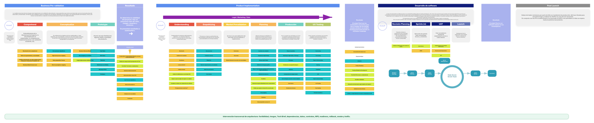

Canvas preview
El archivo editable es Excalidraw; este HTML muestra su export SVG en tamaño real.
Descargar .excalidraw
Abrir SVG
Abrir Excalidraw

Para editarlo: descargá el archivo
.excalidraw
e importalo en Excalidraw.